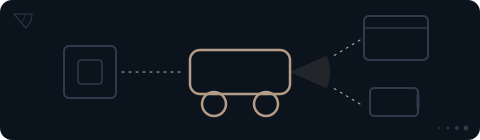

Diagrammer og selskabseksempler bygger på opgørelsen 16.10.2026. Se de aktuelle selskaber og fondsvægte nedenfor. Se temaets aktuelle selskaber ↓
Robotter & fysisk AI
Leverer selskabet en sans, styringen eller hele maskinen?

Et system, der kan beskrive et rum, er ikke nødvendigvis en maskine, der kan bevæge sig i det. Udforsk sensorer, styring og bevægelse, og se forskellen på at levere en del og at bygge den færdige maskine.
af PMINDI er placeret i temaet.
Andele pr. 16.10.2026. Et felt er 1 % af hele fonden. Temaerne er NewDeal Invests redaktionelle opdeling.
Se fordelingen og datagrundlaget ↓Det undersøger vi på siden
Fonden
Temaets andel af fonden
7,23%
af fonden ligger i temaet Robotter & fysisk AI.
Temaet har 27 af fondens 373 selskaber og er det femte største af fondens 12 temaer. Kun Chips og halvledere, Energi og elnet, Datacentre samt Platformsøkonomi er større. Temaerne er NewDeal Invests egen opdeling af fondens selskaber.
Siden viser, hvilke dele det er, og hvor meget hver del fylder. Den kan ikke vise, hvor meget af selskabernes omsætning der kommer fra AI, for det kan ikke opgøres.
Alle procenter på siden er andele af hele fonden, afdelingen PMINDI (NewDeal Invest klasse n, den udloddende andelsklasse, der udbetaler udbytte) pr. 16.10.2026.
Hvad der vejer mest
Mest hjul og propeller
Mange tænker på menneskelignende robotter, når de hører om robotter og AI. I fonden ser det anderledes ud. Biler, droner og fly står for omkring tre femtedele af temaet. Tesla alene er omkring en femtedel. Teslas samlede omsætning (biler, energi og tjenester) var i 2025 omkring fem gange så stor som værdien af alle de industrirobotter, der blev sat op i verden samme år, ifølge brancheforeningen IFR.
Læs mere
Robotterne er den mindste del, under en tiendedel af temaet. Tesla oplyser i sin årsrapport for 2025, at robotten Optimus er under udvikling. Skalselskabet Churchill Capital Corp XI har annonceret en sammenlægning med Agility Robotics, som laver menneskelignende robotter, men den er ikke gennemført. Et skalselskab er et selskab uden egen drift, som er oprettet for at gå sammen med et andet.
Ford og General Motors er med, fordi de laver elbiler og systemer, der hjælper føreren, men de fleste af Fords biler kører stadig på benzin eller diesel. Ford er alligevel temaets næststørste selskab med 0,75 % af fonden. 16 af de 27 selskaber fylder hver mindre end 0,20 % af fonden.
Øjne, hjerne og hjul
Maskinen, del for del
Andel af hele fonden, afdelingen PMINDI pr. 16.10.2026
Tegningen viser én maskine med seks dele. Jo større en del er, jo mere fylder den i fonden. Tryk på en del for at se selskaberne.
Hjul og propeller fylder mere end øjne, hjerne, nerver, arme og ben tilsammen.
Hjul
Elbiler og biler med førerassistance · 5 selskaber · 2,58 % af fonden
Biler, der kører på strøm, og som ofte har systemer, der hjælper føreren med at styre og bremse. Det er den største del af temaet. Tesla leverede omkring 1,64 mio. biler i 2025, ca. 13 gange så mange som de nye elbiler, der blev indregistreret i Danmark samme år.
Tryk på et selskab for at se, hvad det laver.
Propeller og vinger
Droner og elektrisk luftfart · 7 selskaber · 1,78 % af fonden
Flest selskaber ligger her. Droner, elektriske lufttaxaer, der letter lodret, og software, der kan overtage pilotens opgaver i et fly. Flere af selskaberne har kunder i forsvaret. Ifølge Archers kvartalsrapport pr. 30.06.2026 flyver lufttaxaen ikke med betalende passagerer. Selskabet arbejder på at få flyet godkendt. Om satellitter og raketter kan du læse på siden Rumfart.
Tryk på et selskab for at se, hvad det laver.
Nerver
Små computere og smarte enheder · 3 selskaber · 0,83 % af fonden
Små computere og enheder i hjem og industri, der måler, styrer og sender data videre. Den største er Raspberry Pi, som laver små computere på ét printkort. Som nerverne i en krop sender de signaler videre.
Tryk på et selskab for at se, hvad det laver.
Øjne
Sensorer og lidar · 4 selskaber · 0,76 % af fonden
Sensorer måler omgivelserne. Lidar måler afstand med laserlys, som sendes ud og kastes tilbage fra ting, så maskinen får et billede af det, der er rundt om den. Ét selskab laver sonar og robotter til brug under vand. Om chipsene inde i sensorerne kan du læse på siden Chips og halvledere.
Tryk på et selskab for at se, hvad det laver.
Hjerne
Selvkørende kørsel · 5 selskaber · 0,72 % af fonden
Software, der tolker det, øjnene ser, og vælger, hvad køretøjet skal gøre, fx bremse eller dreje. Tre af selskaberne har base i Kina. Flere kører med robottaxaer og selvkørende lastbiler.
Tryk på et selskab for at se, hvad det laver.
Arme og ben
Robotter · 3 selskaber · 0,56 % af fonden
Robotter, der flytter kasser på lagre eller kører varer ud på fortovet. I 2025 blev der sat omkring 1.650 nye industrirobotter op i verden hver dag, men selskaberne i denne del laver ikke de klassiske robotarme til fabrikker. Det gør Teradyne, som ejer Universal Robots i Odense. Teradyne tælles under Chips og halvledere, se Også med en fod.
Tryk på et selskab for at se, hvad det laver.
Delene, set nærmere
Hvordan får en robot øje på verden?
Øjne
En lidar måler afstand med laserlys og tegner omgivelserne som prikker. TED-Ed forklarer, hvordan en selvkørende bil ser. Videoerne er ikke fondens holdning.
Se efter: Se efter forskellen på en demonstration og en maskine, der løser opgaven i drift.
Se efter: Se efter forskellen på en demonstration og en maskine, der løser opgaven i drift.
HjerneMed i en førerløs lastbilCNBC, 2026, på engelsk. En reporter kører med i en selvkørende lastbil i Texas.
Se efter: Se efter forskellen på en demonstration og en maskine, der løser opgaven i drift.
Arme og benSelskabets egen videoSmå robotter på et lagerSymbotic, 2025, på engelsk. Symbotic er et af fondens selskaber.
Læs mere: sådan opfatter en robot et nyt sted
Se efter: Se efter forskellen på en demonstration og en maskine, der løser opgaven i drift.
Selskabets egen videoSådan opfatter en robot omgivelserneAgility, 2023, på engelsk. Agility Robotics er ikke selv i fonden.
Uden for tegningen
Også med en fod i fysisk AI
Disse selskaber hører først og fremmest til et andet tema, men laver også noget til maskinerne, fx batterier eller chips. De tælles med under deres eget hovedtema, ikke her.
- EnovixHovedtema: Energi og elnet0,63 % af fonden
- SES AIHovedtema: Energi og elnet0,44 % af fonden
- QuantumScapeHovedtema: Energi og elnet0,42 % af fonden
- onsemiHovedtema: Chips og halvledere0,35 % af fonden
- Ballard Power SystemsHovedtema: Energi og elnet0,33 % af fonden
- Solid PowerHovedtema: Energi og elnet0,24 % af fonden
- Renesas ElectronicsHovedtema: Chips og halvledere0,23 % af fonden
- UberHovedtema: Platformsøkonomi0,20 % af fonden
- MP MaterialsHovedtema: Råstoffer0,20 % af fonden
- IPG PhotonicsHovedtema: Datacentre0,18 % af fonden
- Amprius TechnologiesHovedtema: Energi og elnet0,17 % af fonden
- Infineon TechnologiesHovedtema: Chips og halvledere0,14 % af fonden
- Nordic SemiconductorHovedtema: Chips og halvledere0,11 % af fonden
- MicrovastHovedtema: Energi og elnet0,09 % af fonden
- AmbarellaHovedtema: Chips og halvledere0,07 % af fonden
- TeradyneHovedtema: Chips og halvledere0,04 % af fonden
- SamsaraHovedtema: Software & AI0,04 % af fonden
De 17 selskaber fylder tilsammen 3,88 % af hele fonden, afdelingen PMINDI pr. 16.10.2026.
Seks af selskaberne på tegningen laver også noget, der hører til et andet tema: Tesla og Shelly (Energi og elnet), Raspberry Pi og Horizon Robotics (Chips og halvledere), AIRO Group (Rumfart) og Swarmer (Software & AI). I fondens opdeling tælles de kun med her.
Set udefra
Maskinerne i nyhederne
Her er udvalgte opslag og videoer fra medier og selskaber. De er ikke fondens holdning. „Kort fortalt“ er vores danske gengivelse. Opslaget hentes først fra X, når du trykker på „Vis opslaget“.
Delt af Mads Christiansen fra teamet bag NewDeal Invest
Robotter
Wall St Engine @wallstengine · på engelsk
Kort fortalt Ifølge Wall St Engine oplyser Tesla, at de første Optimus-robotter i produktionskvalitet nu kommer fra produktionslinjer på fabrikken i Fremont. Ifølge opslaget er produktionen stadig i en tidlig fase, og Tesla har ikke oplyst mængder eller en tidsplan.
Hvad skal du lægge mærke til? Læs opslaget sammen med afsnittet om robotter. Se efter forskellen på en demonstration og en maskine, der løser opgaven i drift.
Selvkørende kørsel
Reuters @Reuters · på engelsk
Kort fortalt Ifølge Reuters tester det kinesiske selskab Baidu en førerløs taxa i Londons gader. Baidu er ikke blandt fondens selskaber.
Hvad skal du lægge mærke til? Læs opslaget sammen med afsnittet om selvkørende kørsel. Se efter forskellen på en demonstration og en maskine, der løser opgaven i drift.
Robotter
The Information @theinformation · på engelsk
Kort fortalt Ifølge The Information oplyser Agility Robotics, at selskabets nye menneskelignende robot Digit kan arbejde 20 timer i døgnet med opladningspauser på ni minutter, fordi den bruger batterier fra Nyobolt.
Hvad skal du lægge mærke til? Læs opslaget sammen med afsnittet om robotter. Se efter forskellen på en demonstration og en maskine, der løser opgaven i drift.
Tallene er Agility Robotics' egne.
Droner
Reuters @Reuters · på engelsk
Kort fortalt Ifølge Reuters vil private og statslige selskaber i Europa, der driver kritisk infrastruktur, styrke deres forsvar mod droner. Reuters skriver, at nogle forsyningsselskaber beder om lov til selv at skyde droner ned, og at regeringer fra Paris til Berlin følger sagen.
Hvad skal du lægge mærke til? Læs opslaget sammen med afsnittet om droner. Se efter forskellen på en demonstration og en maskine, der løser opgaven i drift.
Robotter
NVIDIA Robotics @NVIDIARobotics · på engelsk
Kort fortalt NVIDIA annoncerer nye værktøjer til at udvikle robotter. Samtidig viser Agile Robots en menneskelignende robot til forskning. Ifølge NVIDIA er robotten bygget på NVIDIAs software og computer til robotter, så forskere kan udvikle, træne og afprøve robottens færdigheder ét sted. Opslaget er NVIDIAs egen meddelelse. NVIDIA er blandt fondens selskaber og hører til temaet Chips og halvledere. Agile Robots er ikke blandt fondens selskaber.
Hvad skal du lægge mærke til? Læs opslaget sammen med afsnittet om robotter. Se efter forskellen på en demonstration og en maskine, der løser opgaven i drift.
Opslagene er udvalgt af teamet bag NewDeal Invest. Afsenderne og de nævnte selskaber står ikke bag denne side, og opslagene er ikke fondens vurdering.
Det skal man vide om temaet
- En demonstration er ikke drift. En maskine, der virker i et forsøg, skal også virke sikkert hver dag, før den giver omsætning. Teslas robot Optimus er under udvikling.Kilde: Tesla, årsrapport (10-K) 2025 (åbner i nyt vindue)
- Godkendelse. Selvkørende biler, droner og lufttaxaer skal godkendes, og reglerne er forskellige fra land til land. Archers lufttaxa skal fx godkendes af den amerikanske luftfartsmyndighed FAA.Kilde: Archer Aviation, årsrapport (10-K) 2025 (åbner i nyt vindue)
- Få selskaber fylder meget. Tesla er temaets største selskab med 1,55 % af fonden, omkring en femtedel af temaet, og også fondens største selskab. De fem største selskaber i temaet fylder tilsammen 3,94 % af fonden, over halvdelen af temaet. Temaet afhænger derfor meget af, hvordan det går for få selskaber.Kilde: afdelingen PMINDI pr. 16.10.2026, se Kilder
- Grænsetilfælde. Nogle selskaber er kun delvist fysisk AI. Ford laver mest almindelige biler, Churchill har ingen egen drift, og Archer har pr. 30.06.2026 ingen væsentlig omsætning. Siden følger NewDeal Invests opdeling af fondens selskaber.Kilder: Ford, årsrapport (10-K) 2025 (åbner i nyt vindue), Churchill, 8-K (åbner i nyt vindue), Archer, 10-K (åbner i nyt vindue), Archer, 10-Q pr. 30.06.2026 (åbner i nyt vindue)
Videre
Det, maskinerne er bygget af

Maskinerne har brug for chips, strøm, materialer og datacentre. De har deres egne temaer i fonden.
Kilder og kreditering
- Andele: afdelingen PMINDI pr. 16.10.2026 (fondens data). Temaer og dele: NewDeal Invests egen opdeling af fondens selskaber. Hvad selskaberne laver, bygger på deres egne årsrapporter.
- Teslas omsætning 2025 og robotten Optimus: Tesla, årsrapport (10-K) 2025 (åbner i nyt vindue). Nye elbiler indregistreret i Danmark i 2025: Danmarks Statistik, tabel BIL51 (åbner i nyt vindue).
- Værdien af alle industrirobotter, der blev sat op i verden, 18,6 mia. USD (2025), og omkring 1.650 nye industrirobotter om dagen: brancheforeningen IFR, IFR, World Robotics 2026, Executive Summary (åbner i nyt vindue) og IFR, pressemeddelelse (åbner i nyt vindue).
- Churchill Capital Corp XI og Agility Robotics: meddelelse til det amerikanske finanstilsyn SEC (8-K) (åbner i nyt vindue) og meddelelse (425) (åbner i nyt vindue). Archer Aviation: årsrapport (10-K) 2025 (åbner i nyt vindue) og kvartalsrapport (10-Q) pr. 30.06.2026 (åbner i nyt vindue). Ford og General Motors: årsrapport (10-K) 2025 for Ford (åbner i nyt vindue) og for General Motors (åbner i nyt vindue).
Kreditering
Tegninger, ikoner og videoplakater. Illustration: NewDeal Invest. Der er ingen fotos på siden.
Videoerne er fra TED-Ed, CNBC, Symbotic og Agility og vises fra YouTube, først når du trykker på dem. Opslagene er fra X. Logoer tilhører de enkelte selskaber og viser kun, hvilke selskaber fonden ejer aktier i. Afsenderne og selskaberne står ikke bag denne side, og der er intet samarbejde med dem.
Selskaberne fra A til Å
Vælg et selskab og læs om forretningen.